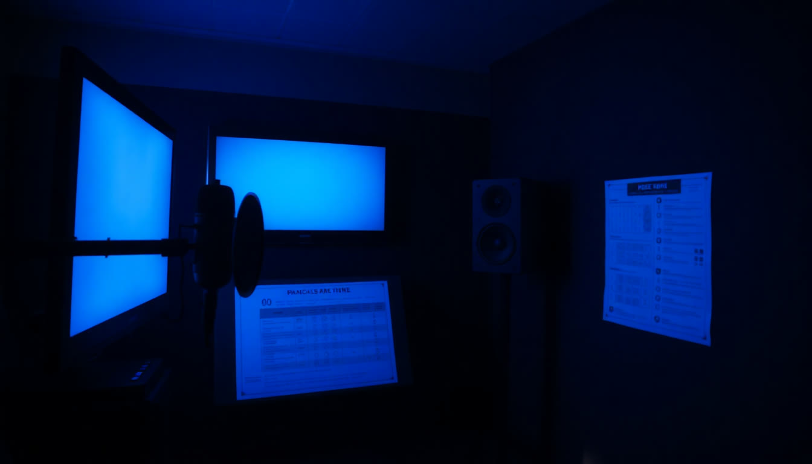

Google: вторая экосистема
Второй ИИ, который знает не как вы думаете, а что у вас происходит.
У каждого из вас теперь есть ассистент.
Зачем тогда второй ИИ?
Ассистент собран
Вы описали свой процесс, ИИ собрал инструкцию, вы дали базу знаний. Он работает.
Но он живёт в вакууме
Он не видит вашу почту, ваш календарь, ваши файлы. Всё, что происходит у вас на неделе, надо пересказывать руками.
А работа лежит рядом
В почте, на диске, в календаре, в заметках. Сегодня подключаем ИИ прямо к ней.
ChatGPT знает, как вы думаете.
Google знает, что у вас происходит.
Сегодня забираем вторую, и она бесплатная.
Одна и та же клавиша. Разные миры
Четыре блока, и после каждого вы что-то уносите
Переезд
Google узнаёт, кто вы, за пять минут. Один раз и навсегда.
Gem-бот
Ваш ассистент, но здесь. Методология та же, что вчера.
Рабочая среда
Почта, диск, календарь и задачи прямо из чата.
Блокноты
Из ваших документов: подкаст, презентация, тест, инфографика.
Всё, что мы делаем сегодня, работает бесплатно
Переезд
Он умный. Но про вас не знает ничего
Как переезжают
Отправьте это в ChatGPT
Теперь то же самое в Gemini
Проверьте, что не соврал
Теперь у вас два ИИ, и оба знают, кто вы
Gem-бот
Учить заново нечего
Метод в инструкцию. Данные в базу
Читается всегда
Читается по необходимости
Три клика до своего Gem-бота
Пять полей и одна галочка
База знаний может быть живой
Волшебная палочка допишет инструкцию за вас
Как работает
Пишете в поле инструкций две-три строки своими словами, нажимаете палочку. Gemini разворачивает это в полноценную инструкцию по всем правилам.
Где подвох
Он допишет красиво, но про ваш бизнес выдумает. Обязательно перечитайте и замените выдуманные цены, сроки и услуги на свои.
«Не указывать источники из базы знаний»
Галочка снята
Ассистент показывает, из какого файла взял ответ. Так и оставьте на время настройки: сразу видно, читает он базу или сочиняет.
Галочка стоит
Ответ идёт чистым текстом, без ссылок на файлы. Включайте, когда ассистент уже отлажен и ответы уходят клиенту.

Соберите здесь того же ассистента, что вчера
Вы только что перенесли навык между платформами за пять минут
Вся работа из одного окна
И он получает доступ к вашей работе
Gmail
Найти письмо, понять суть переписки, собрать ответ
Google Диск
Найти файл и разобрать его, не открывая
Google Документы
Прочитать документ и переписать нужный кусок
Календарь
Собрать неделю, найти окно, подготовить к встрече
Задачи
Достать задачи и разложить по приоритету
Keep
Поднять заметки, которые вы себе кидали
Что спрашивать у почты
Что спрашивать у остального
По одному запросу к каждому сервису
Он читает вашу почту. Значит, думайте, что там лежит
Перерыв 10 минут
Блокноты
Ассистент это метод. Блокнот это источники
Он ест почти всё
Документы
PDF, Word, Google Документы, обычный текст
Сайты
Просто ссылка. Страница конкурента, статья, закон
Видео с YouTube
Ссылка на ролик, он разберёт что там сказано
Аудио
Запись встречи или планёрки
Блокнот сам найдёт источники в интернете
Как это работает
Над списком источников есть строка «найдите новые источники». Пишете тему, он приносит подборку, вы галочками отмечаете нужное.
Зачем это вам
Не надо самому искать статьи и скачивать их. Разведка по чужому рынку собирается за минуту, а не за полдня.

Одни источники. Девять вещей на выходе
Аудиопересказ
Подкаст из двух ведущих по вашим файлам
Видеопересказ
То же самое, но видео
Презентация
Готовая колода по вашим документам
Инфографика
Картинка с главными цифрами
Тест
Проверить, усвоил ли человек материал
Карточки
Для заучивания и тренировки
Ментальная карта
Схема всей темы одним взглядом
Отчёты
Аналитическая записка, бриф, хронология
Таблица данных
Всё разложено по строкам и столбцам
Ваш регламент превращается в подкаст на 12 минут
Обучение людей
Загрузили регламент, получили подкаст. Новый сотрудник слушает в машине, а не читает 40 страниц.
Подготовка к встрече
Все документы по клиенту в блокнот, послушали по дороге, приехали подготовленным.
Разбор конкурентов
Сайты трёх конкурентов ссылками, на выходе разговор о том, чем они отличаются.
Соберите свой первый блокнот
Хороший инструмент это тот,
который умеет сказать «я не знаю»
Что положить в блокнот уже сегодня
Одна вещь действительно платная
Gemini внутри Документов и Gmail
Та самая боковая панель прямо в документе. На бесплатном аккаунте вместо неё показывают рекламу и кнопку «Попробовать». Это не поломка, это тариф.
Но обходится легко
Всё то же самое делается из чата Gemini через собаку. Разница только в том, что вы переключаете вкладку.
Что бесплатно, а что нет
Кто за что отвечает
Четыре вещи, и все работают прямо сейчас
Google знает вас
Переезд сделан, повторять не надо
Gem-бот собран
Ассистент живёт в двух экосистемах
Почта подключена
Работа достаётся из чата
Блокнот собран
И первый подкаст уже записан